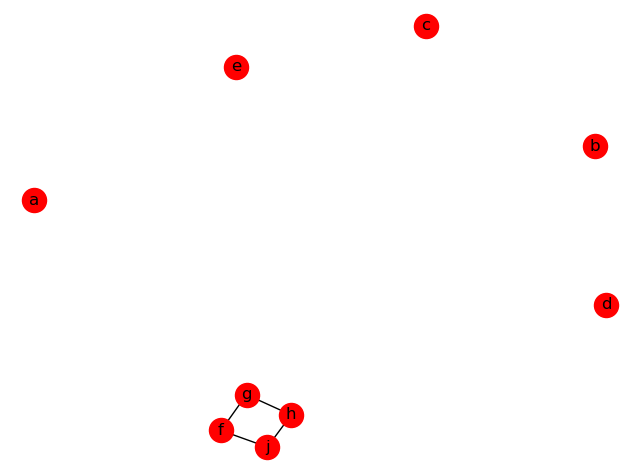
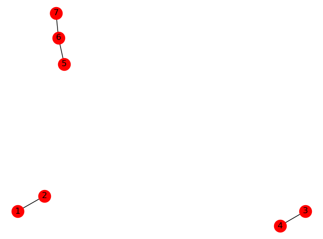
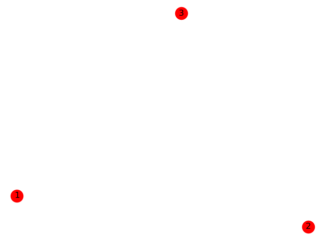
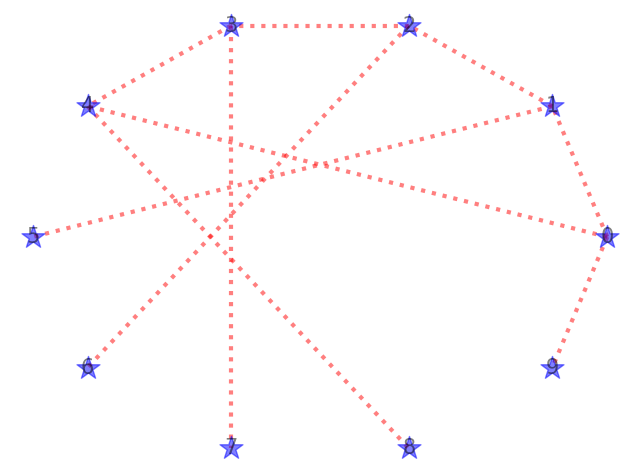
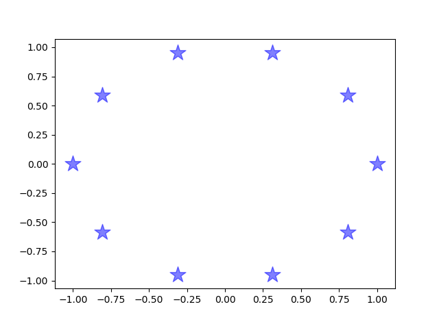
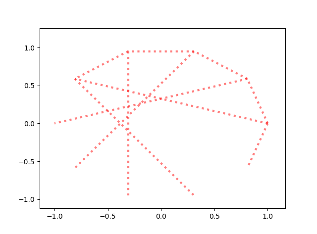
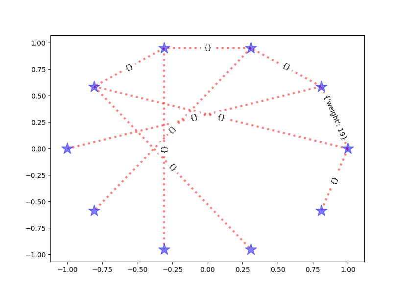
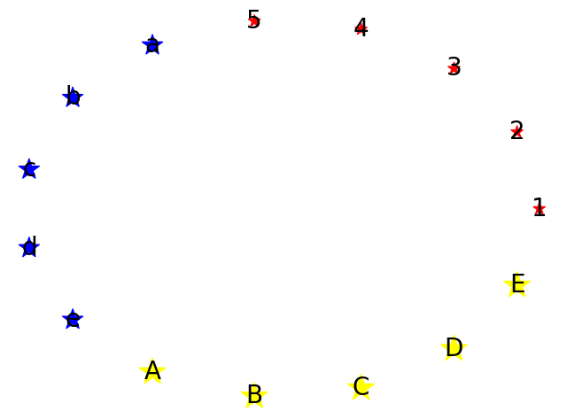
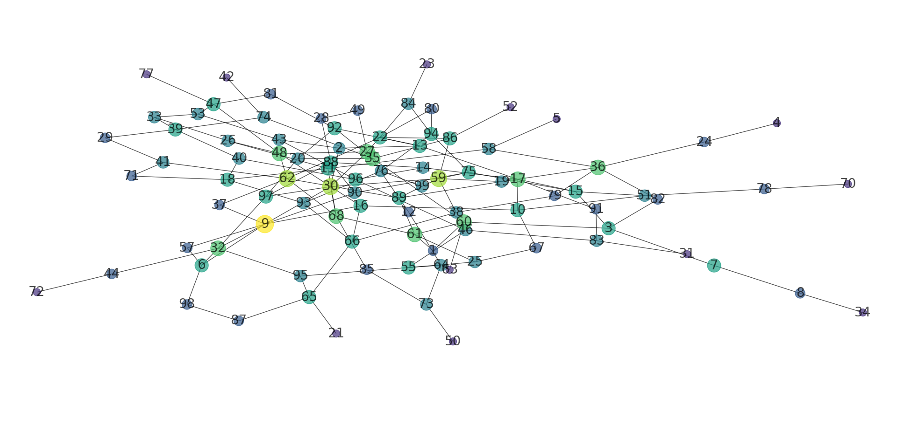

绘图神器-networkx
最近做图网络相关内容，需要用到对于网络进行可视化，所以用到了networkx这个包。
networkx 是一个专门针对图结构进行操作的工具。包括无向图、有向图。
下面记录一下networkx的使用方法。
老样子，首先要importimport networkx
图的创建和清空
1 | G = nx.Graph() # 创建无向图 |
节点操作
增加节点
1 | G = nx.Graph() #建立一个空的无向图G |

访问节点
1 | print('图中所有的节点', G.nodes()) |
G.nodes()返回所有节点组成的列表。
删除节点
1 | G.remove_node(1) #删除指定节点 |
边操作
增加边
1 | F = nx.Graph() # 创建无向图 |

访问边
1 | print('图中所有的边', F.edges()) |
F.edges()返回一个列表，列表中每个元组表示一条边：
1 | [(1, 2), (3, 4), (5, 6), (6, 7)] |
删除边
1 | F.remove_edge(1,2) # 删除单条边 |
属性
图、边、节点都可以有自己的属性，比如weight、color、label、alpha等。
图、边和节点的属性都是通过一个字典来保存的，默认字典为空，即没有属性。
图的属性
1 | G = nx.Graph(day='Monday', name='graph', time='5.00', color='red') #可以在创建图时分配图的属性 |
上面的输出如下
1 | {'day': 'Monday', 'name': 'graph', 'time': '5.00', 'color': 'red'} |
节点属性
1 | G = nx.Graph(day='Monday', name='graph', time='5.00', color='red') #可以在创建图时分配图的属性 |
上面代码产生的图如下：

注意，这里节点的属性和画出的图没有关系。例如，代码中指定节点的color属性为blue，然而画出的图中节点color还是红色。所以说节点的属性和画出的节点的样子这里是没有关系的。
具体如何设置节点画出来的样子，后面会讲到。
边属性
边属性和节点属性大同小异。
1 | G.add_edge(1,2,weight=10) #在添加边时分配属性 |
上面的输出如下：
1 | [(1, 2, {'weight': 10})] |
注意：边的weight属性是一个特殊属性，表示边的权重，只能设置为数字类型。
无向图和有向图之间的转换
1 | #有向图转化成无向图 |
一些常用函数
G.degree()
返回图中所有节点及其度数
输出：[(0, 2), (1, 2), (2, 2), (3, 2), (4, 2)]
元组中第一位是节点，第二位是该节点的度数。例子中节点0到4的度数都是2.
等价：nx.degree(G)G.nodes()
返回图中所有节点
输出：[0, 1, 2, 3, 4]
等价：nx.nodes(G)G.nodes().data()
返回图中所有节点，并且带有属性
输出：[(0, {‘size’: 10}), (1, {}), (2, {}), (3, {}), (4, {})]
例子中只有节点0有size属性，其他节点均没有指定属性，因此属性字典为空
等价：nx.nodes(G).data()G.edges()
返回所有的边
输出：[(0, 1), (0, 4), (1, 2), (2, 3), (3, 4)]
等价：nx.edges(G)G.edges().data()
返回所有的边，并且带有属性
输出：[(0, 1, {‘weight’: 9}), (0, 4, {}), (1, 2, {}), (2, 3, {}), (3, 4, {})]
例子中只有边0-1有weight属性，其他边都没有属性，因此属性字典为空
等价：nx.edges(G).data()nx.density(G)
返回图G的密度G.nodes()[0]
选中某个node，返回该node的属性。例子中是选中node 0.
输出：{‘size’: 10, ‘color’: ‘red’}
等价：G.node[0]G[0][1]
选中某个edge，返回改edge的属性。例子中是选中边0-1
例如：{‘weight’: 9}nx.get_node_attributes(G, ‘size’)
返回图中有size属性的节点，及其属性
输出：{0: 10, 1: 2}
例子中，节点0的size为10， 节点1的size为2.nx.get_edge_attributes(G, ‘weight’)
返回图中有weight属性的边，及其属性值
输出：{(0, 1): 9}
例子中，只有边0-1有weight属性，weight为9遍历图中的节点可以用如下方法：
for node in Gfor node in G.nodefor node in G.nodes()
画图
终于开始画图了
最基本的画图方法，使用draw()函数：
1 | G = nx.Graph() |
一些画图属性参数
| 属性 | 描述 |
|---|---|
| node_size | 节点大小，默认300 |
| node_color | 节点颜色，默认red |
| node_shape | 节点形状，默认’o’ |
| alpha | 透明度，默认1，不透明 |
| width | 边的宽度，默认1 |
| edge_color | 边的颜色，默认黑色 |
| style | 边的样式，默认为实线，可选择solid、dashed、dotted、dashdot |
| with_labels | 节点是否带标签，默认True |
| font_size | 字体大小，默认12 |
| font_color | 节点标签的字的颜色，默认黑色 |
节点布局
pos = nx.kamada_kawai_layout(G)
布局种类如下：
- circular_layout：节点在一个圆环上均匀分布
- random_layout：节点随机分布
- shell_layout：节点在同心圆上分布
- spring_layout： 用Fruchterman-Reingold算法排列节点（这个算法我不了解，样子类似多中心放射状）
- spectral_layout：根据图的拉普拉斯特征向量排列节
画图函数
nx.draw()函数
该函数画整个图
1 | G = nx.Graph() |
效果图如下：

nx.draw_networkx_nodes() 画点
该函数参数与nx.draw()函数相同，不过该函数只画图中的点。
1 | G = nx.Graph() |
效果图如下：

nx.draw_networkx_edges() 画线
同理，该函数只画线nx.draw_networkx_edges(G, pos=pos, with_labels=True, node_size=300, node_color='blue', node_shape='*', alpha=0.5, edge_color='red', width=3, style='dotted', font_size=15)
效果图如下：

draw_networkx_edge_labels 画线的标签
该函数只画线的标签
因此整合前面三个函数，我们就可以画点、线和标签。
1 | nx.draw_networkx_nodes(G, pos=pos, with_labels=True, node_size=300, node_color='blue', node_shape='*', alpha=0.5, edge_color='red', width=3, style='dotted', font_size=15) |
效果图如下：

画不同种类的点
有时候一个网络中有多种不同的节点或者不同的边，我们在可视化的时候，想要用不同颜色或者不同形状来表示不同类型的节点；或者我们希望节点的大小也能够根据节点的属性来动态调整。
此时，图中所有的点都是一个样子就不够了。我们需要为不同的节点设定不同的样式。
例如我们有如下数据
1 | A = [1, 2, 3, 4, 5] |
有A,B,C三种类型的点，我们想让这三种类型的点区分开来
代码如下：
1 | G = nx.Graph() |
效果图如下：

不过这里只设置了不同的node_size 和 node_color，其他属性貌似不支持传入列表迭代，例如node_shape和alpha好像都不可以。
如果想不同的点设置不同的node_shape或者alpha似乎只能通过分别画点来实现。
这样我们就将节点的属性和画图时的样式联系起来了。
当然也可以根据节点的度数来设置节点的大小，以此来凸显网络中较为重要的节点：
1 | G = nx.Graph() # 创建一个新的图G |
效果图如下：
